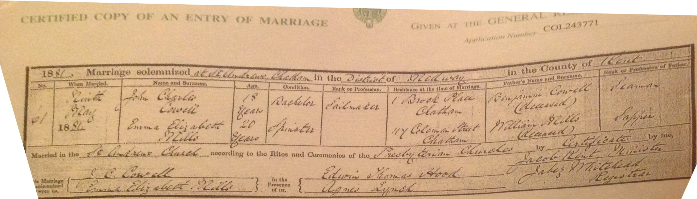
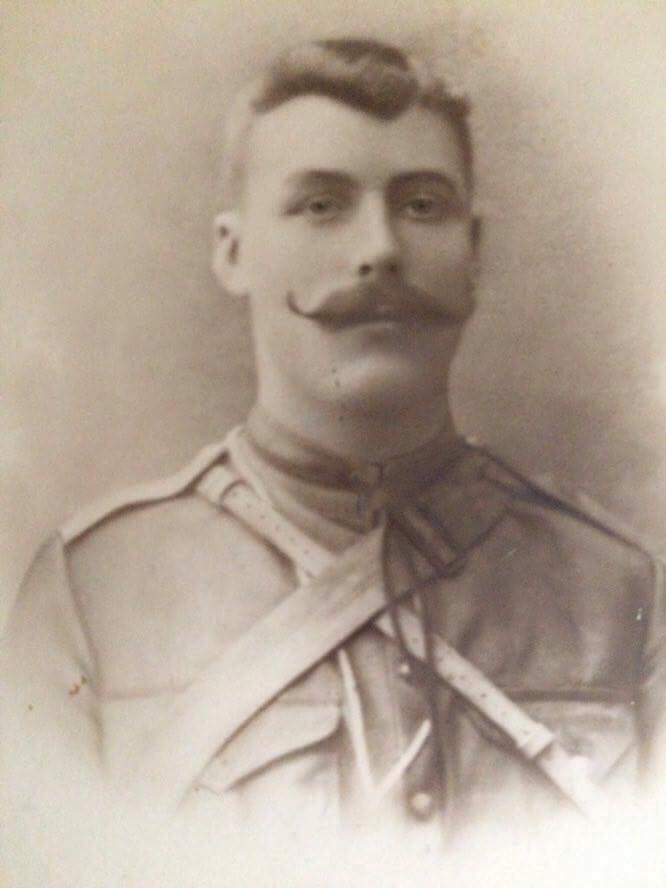
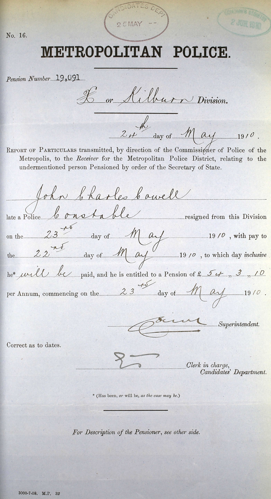
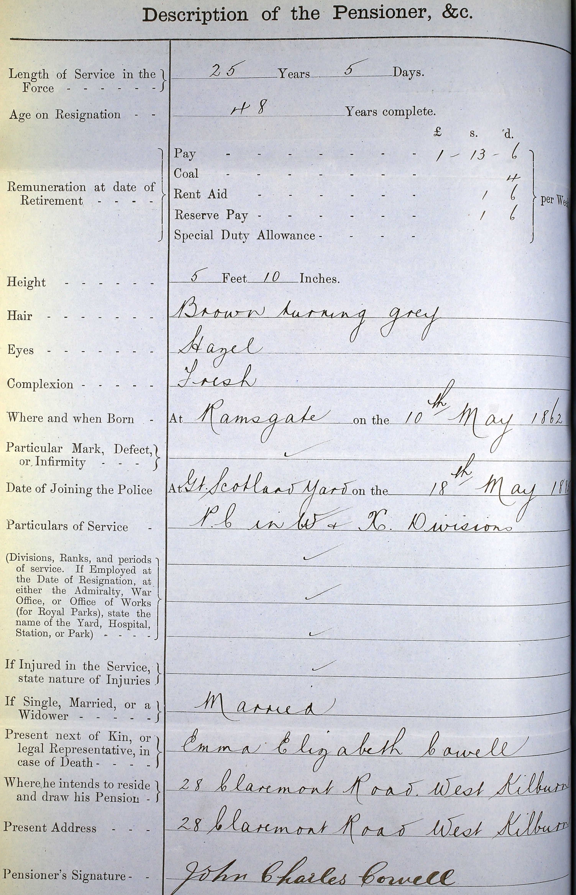
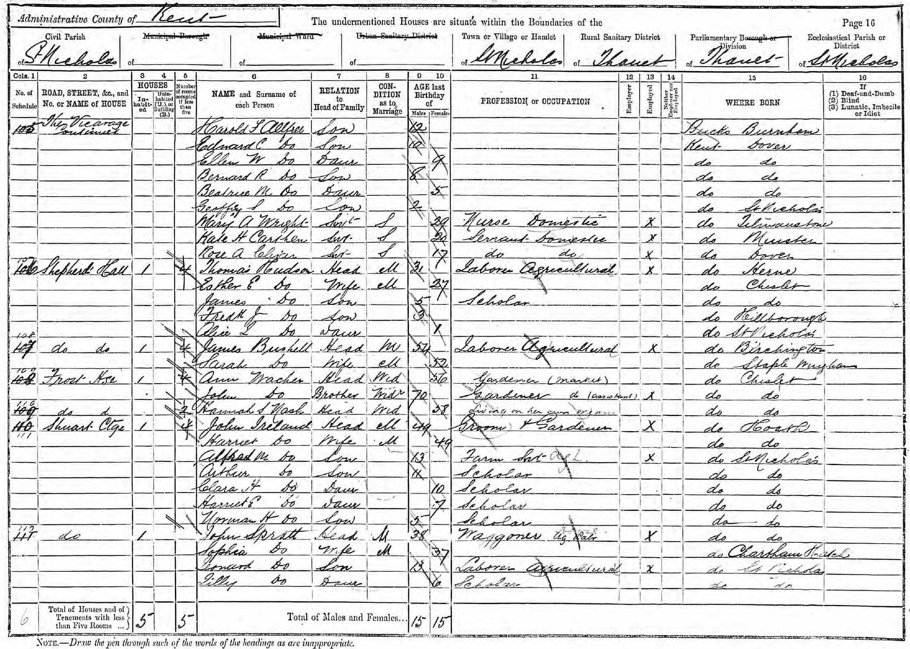

John Charles Cowell 1862 - c1927
[ Home ] | [ Calendar ] | [ Surnames Index ] | [ Errors ] | [ Family History ]A police constable, sail maker and caretaker and verger and the child of Benjamin Cowell (a mariner) and Sarah Ewen (a needlewoman), John Cowell, the second cousin three-times-removed on the mother's side of Nigel Horne, was born in Ramsgate, Kent, England on 10 May 18621, was baptised there at Christ Church, Vale Square on 13 Jul 1862 and married Emma Mills (with whom he had 4 children: John Francis, Sydney James Henry, Lillian Eleanor and Bertie Charles) in Chatham, Kent, England on 9 May 18813.
During his life, he was living at 2 Rodney Street in Ramsgate on 2 Apr 18717; at 1 Brock Alley in Chatham on 3 Apr 18818; at 71 Victoria Road, Willesden, London, England on 5 Apr 18915; and at 28 Claremont Road, Kilburn, London on 31 Mar 19016, on 2 Apr 19114 and on 19 Jun 19219. In 1921 he was working at Rev G Martin at St Johns Church, 52 Oxford Road, Kilburn, London, England.
He died c. Feb 1927 in Willesden2.
Parents
- Benjamin was born in 1825
- Sarah was born on 1 Jan 1827
Children
- John Francis was born on 16 Sept 1881
- Sydney James Henry was born on 6 Feb 1884
- Lillian Eleanor was born on 18 Apr 1886
- Bertie Charles was born on 5 Mar 1888
Citations
- England & Wales births 1837-2006 - Findmypast
- England & Wales deaths 1837-2007 - Findmypast
- England & Wales marriages 1837-2008 - Findmypast
- 1911 Census for England & Wales - Findmypast (was age 48 and the head of the household)
- 1891 England, Wales & Scotland Census - Findmypast (was age 28 and the head of the household)
- 1901 England, Wales & Scotland Census - Findmypast (was age 38 and the head of the household)
- 1871 England, Wales & Scotland Census - Findmypast (was age 8 and the son of the head of the household)
- 1881 England, Wales & Scotland Census - Findmypast
- 1921 Census Of England & Wales - Findmypast (was age 59 and the head of the household)
Media
John Cowell - Emma Mills - marriage certificate

John Charles Cowell

John Charles Cowell - resign

John Charles Cowell - resign page 2

1871 UK Census

1881 UK Census

1891 UK Census

1901 UK Census

1911 UK Census - page 1

1911 UK Census - page 2

England & Wales marriages 1837-2008 - BMD/M/1881/2/AZ/000061/116
1911 Census for England & Wales - GBC/1911/RG14/06995/0873/1
England & Wales deaths 1837-2007 - BMD/D/1927/1/AZ/000252/106
1901 England, Wales & Scotland Census - GBC/1901/0008349754
England & Wales births 1837-2006 - BMD/B/1862/2/AZ/000269/084
1871 England, Wales & Scotland Census - GBC/1871/0014299391
England, Births & Baptisms 1538-1975 Transcription - R_884612563
Canterbury Baptisms Transcription - GBPRS-CANT-B-96521930
1881 England, Wales & Scotland Census Transcription - GBC-1881-0004465057
1921 Census Of England & Wales - GBC/1921/RG15/06468/0689/01
Family Tree

Map
Generated by ged2site. Last updated on Jul 3, 2024